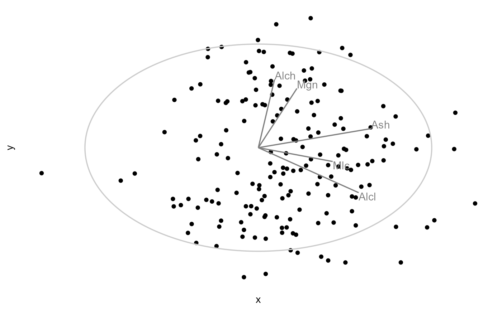

Prepare the ggplot object before passing to either animation package.
Source:R/zDepricated_2_render.r
render_.Rd![[Superseded]](figures/lifecycle-superseded.svg) , see
, see ggtour.
Typically called by render_plotly() or render_gganimate(). Takes the
result of array2df(), and renders them into a ggplot2 object.
render_(
frames,
axes = "center",
manip_col = "blue",
line_size = 0.6,
text_size = 4,
aes_args = list(),
identity_args = list(),
ggproto = list(theme_spinifex())
)Arguments
- frames
The result of
array2df(), a long df of the projected frames.- axes
Position of the axes, expects one of: "center", "left", "right", "bottomleft", "topright", "off", or a map_absolute() call. Defaults to "center".
- manip_col
String of the color to highlight the
manip_var, if used. Defaults to "blue".- line_size
The size of the lines of the unit circle and variable contributions of the basis. Defaults to .6.
- text_size
The size of the text labels of the variable contributions of the basis. Defaults to 4.
- aes_args
A list of aesthetic arguments to passed to
geom_point(aes(X). Any mapping of the data to an aesthetic, for example,geom_point(aes(color = myCol, shape = myCol))becomesaes_args = list(color = myCol, shape = myCol).- identity_args
A list of static, identity arguments passed into
geom_point(), but outside ofaes();geom_point(aes(), X). Typically a single numeric for point size, alpha, or similar. For example,geom_point(aes(), size = 2, alpha = .7)becomesidentity_args = list(size = 2, alpha = .7).- ggproto
A list of ggplot2 function calls. Anything that would be "added" to ggplot(); in the case of applying a theme,
ggplot() + theme_bw()becomesggproto = list(theme_bw()). Intended for aesthetic ggplot2 functions (not geom_* family).
Examples
## Setup
dat_std <- scale_sd(wine[, 2:6])
clas <- wine$Type
bas <- basis_pca(dat_std)
mv <- manip_var_of(bas)
mt_array <- manual_tour(basis = bas, manip_var = mv)
mt_df_ls <- array2df(basis_array = mt_array, data = dat_std)
## Required arguments
render_(frames = mt_df_ls)

## Full arguments
require("ggplot2")
render_(frames = mt_df_ls, axes = "left", manip_col = "purple",
aes_args = list(color = clas, shape = clas),
identity_args = list(size = 1.5, alpha = .7),
ggproto = list(theme_minimal(),
ggtitle("My title"),
scale_color_brewer(palette = "Set2")))
